From CAD to DB
FOSS4G to the rescue!
May 25th, Geocamp 2013, Óbidos
Jorge Sanz
- Working at Prodevelop
- @xurxosanz
- Hacking at:
Agenda
- The world is complicated
- Our use case
- First part: AutoCAD
- Second part: GeoKettle
- Conclusions
The world is complicated
On harbours we have draughtsmen,
surveyors, civil engineers
- High skills on technical drawings, surveying, etc
- Almost 0 (zero) knowledge on GIS or databases
- They live inside AutoCAD
The world is complicated
...but harbours want to use GIS to manage
- their space (€€€)
- emergencies (real or simulated)
- industrial and environmental sensors
- real time moving elements
World is complicated
...so they usually implement GIS at some level
and our loved draughtsman have
to load THEIR
data into the GIS
One use case
- We have a space management application
- Cartography is maintained in DWG format
- We have to load that data
into an Oracle database - The draughtsman has to be able to load it as he does changes on the cartography
Requirements
- On demand execution
- From AutoCAD (really, those guys live inside it)
- Some feedback of the process
- Tolerant to messy drawings

Our last approach
- Use GeoKettle to migrate data
- Executed as an AutCAD tool
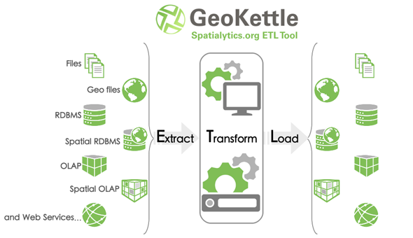
First part: AutoCAD
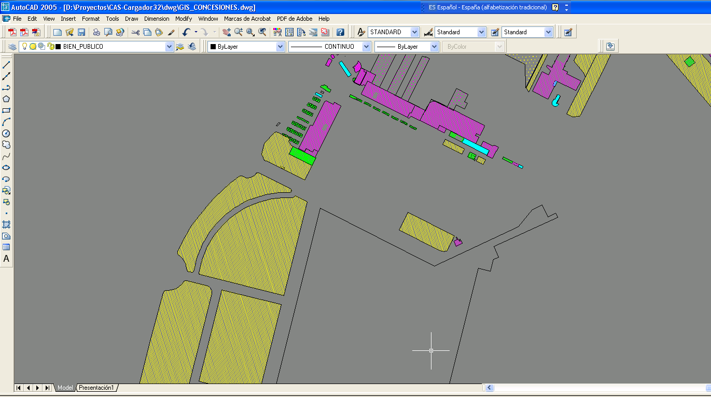
First part: AutoCAD
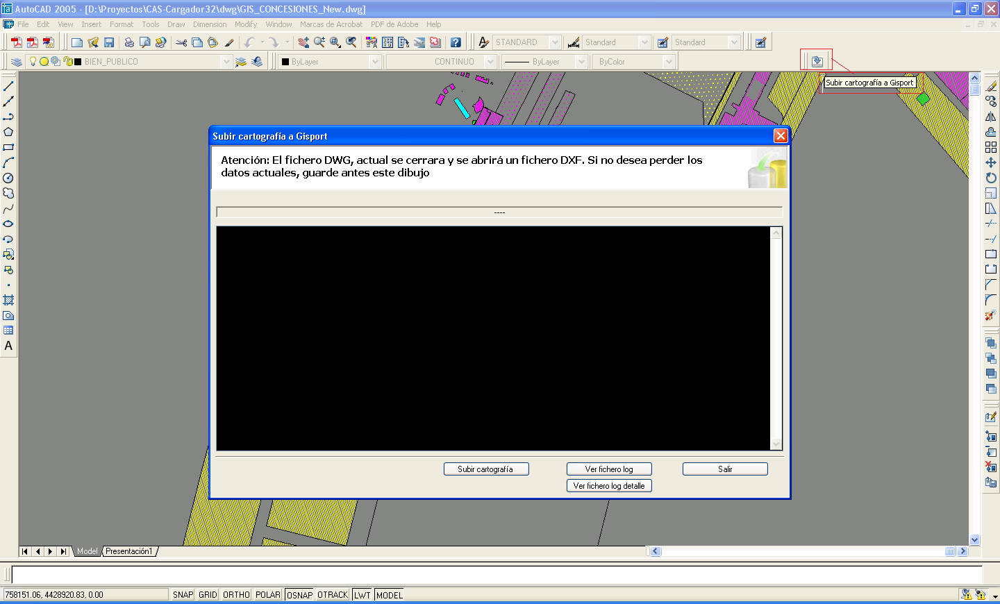
First part: AutoCAD
- Saves the drawing as a DXF
- Launches a GeoKettle Job
- Presents the results
Second part: GeoKettle
What is Kettle?
- Extraction
- Transformation
- Load
Bulding blocks
- Step: minimum element, a task
- Transformation: chain of steps
- Job: sequential execution and coordination of jobs and trans.
Three user interfaces:
- Spoon: Graphical User Interface
- Kitchen: CLI to execute jobs
- Pan: CLI to execute transformations
- Carte: web
Spoon: tranformation
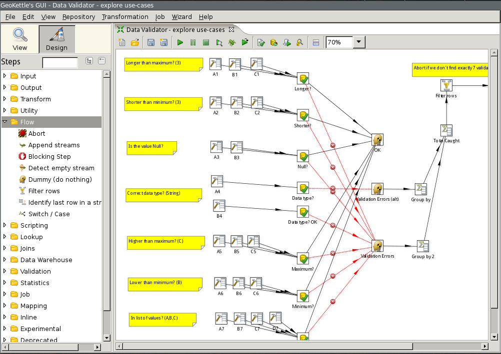
Spoon: job
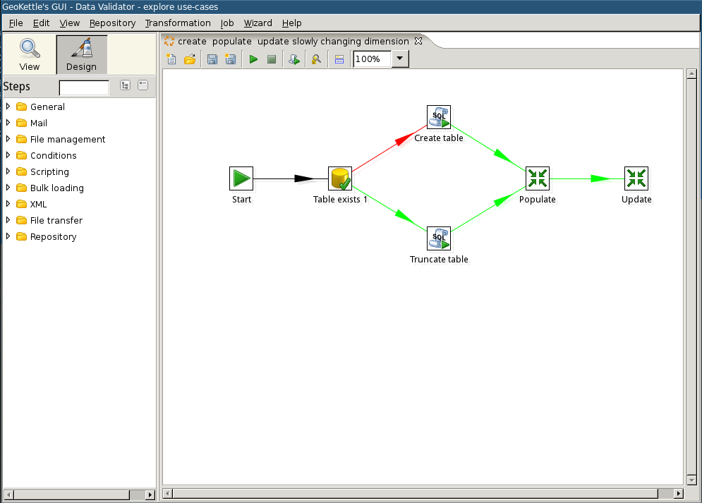
GeoKettle
- Techical fork of Kettle
- Java
- Multiplatform
- LGPL
- Integrates: GDAL/OGR/...
- Uses JTS and GeoTools
- Steps for GI: analysis, projections, OGC services,...
GeoKettle
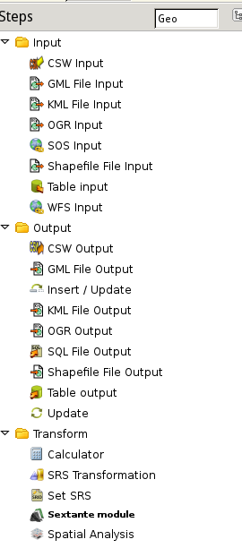
Our process
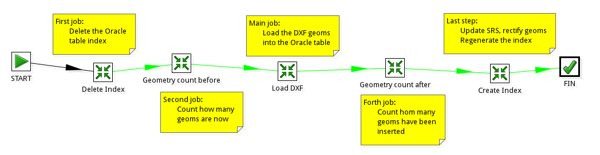
Delete index
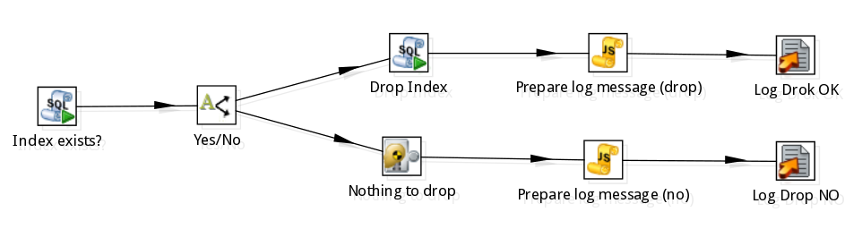
Delete index
SELECT
index_name
FROM
SYS.user_indexes
WHERE
index_name LIKE 'myTable_IDX';
Count geometries
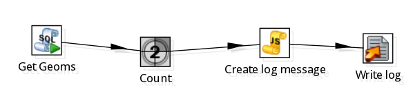
Load DXF into Database
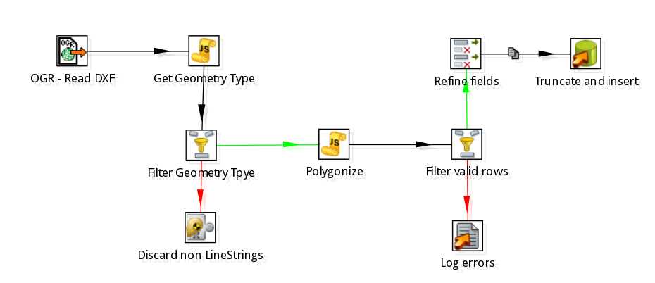
Get geometry type
if(the_geom !== null){
type = the_geom.getGeometryType();
}
Polygonize
Polygonize
if(the_geom !== null){
factory = the_geom.getFactory();
coords = the_geom.getCoordinates();
}
try{
if ( coords[0].equals(coords[coords.length - 1])) {
isValid = true;
lineRing = factory.createLinearRing(coords);
the_geomPol = factory.createPolygon(lineRing,null);
area = the_geomPol.getArea();
}
else {
isValid = false;
the_geomPol = null;
area = 0;
}
} catch(err){
isValid = false;
the_geomPol = null;
area = 0;
}Filter, refine and load
Count geometries after load
Finish the job
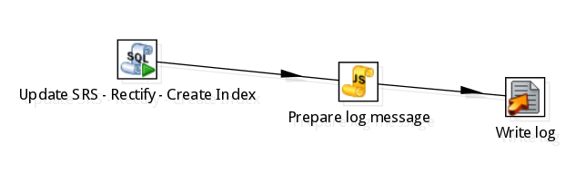
Finish the job 1/3
Set the correct SRS
UPDATE myTable a
SET a.geometry.sdo_srid=83030
WHERE a.geometry IS NOT NULL;
Finish the job 2/3
Fix invalid geometries
UPDATE myTable a
SET geometry =
SDO_UTIL.RECTIFY_GEOMETRY(geometry, 0.00001)
WHERE
SDO_GEOM.VALIDATE_GEOMETRY_WITH_CONTEXT(
a.geometry,0.00001) <> 'TRUE'
AND a.geometry is not null
AND a.geometry.SDO_GTYPE is not null
AND SDO_GEOM.VALIDATE_GEOMETRY(a.geometry,0.00001)
IN ('13367','13356','13349');
Finish the job 3/3
Create a new index
CREATE INDEX myTable_IDX ON
myTable(geometry)
INDEXTYPE IS
MDSYS.SPATIAL_INDEX PARAMETERS('sdo_indx_dims=2');
Present results
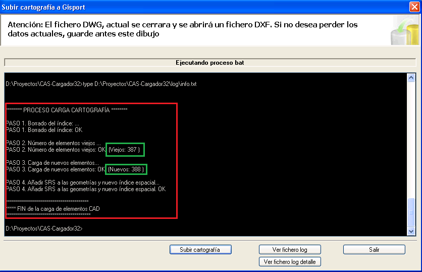
Et voilà!
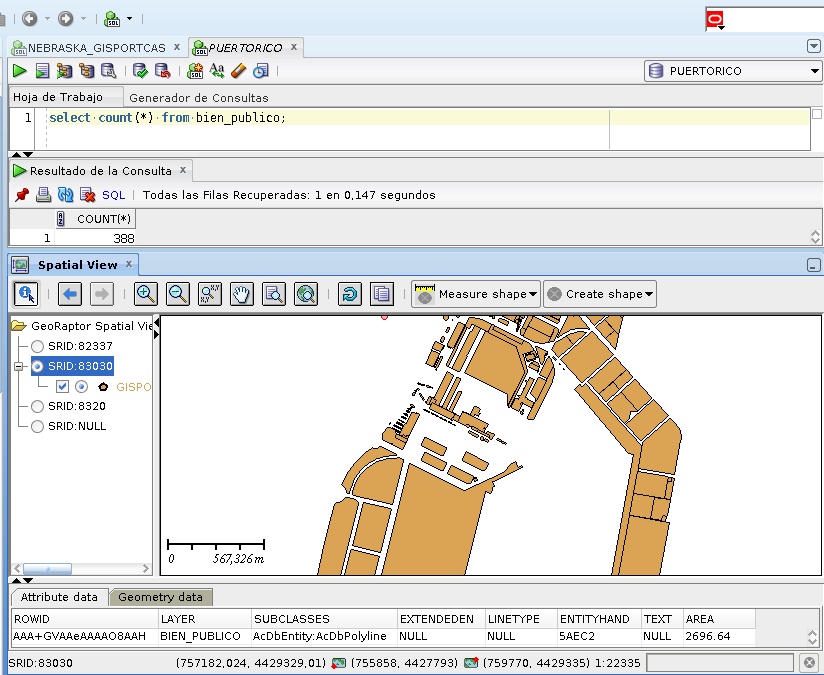
Remarks
- GeoKettle is a powerful tool to manipulate data
- It is a specialized desktop GIS to automate processes that will be executed many times
-
It is mainly focused on powers users with
knowledge on SQL, JavaScript, OGR/GDAL,...

From CAD to DB
Thanks!!
Happy Towel Day!!!
References
Pictures
Draughtsman, Genoa accident at The Telegraph , stylish gifs from topito

This content is under a Creative Commons Attribution-NonCommercial-ShareAlike 3.0 unported license.